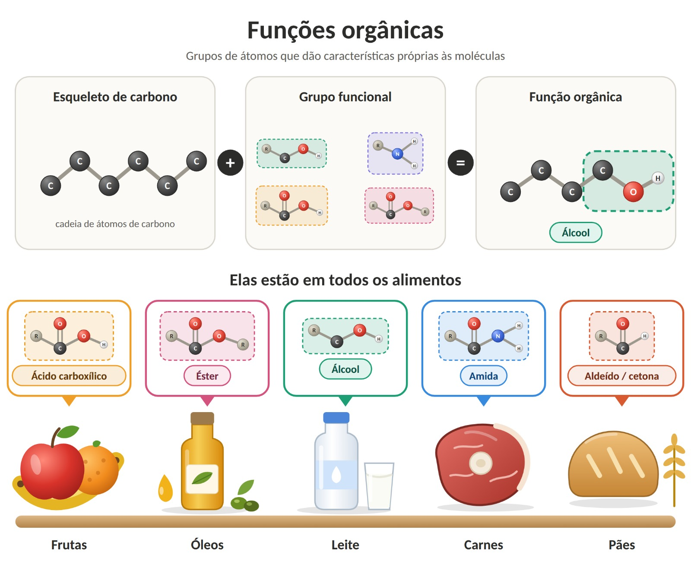

O que são funções orgânicas?
Os compostos orgânicos, que têm carbono em sua estrutura, são muitíssimos. Para estudá-los, a Química os organiza em grupos chamados funções orgânicas. Cada função reúne substâncias que têm o mesmo grupo funcional, um átomo ou conjunto de átomos que dá a elas propriedades químicas parecidas.
Principais grupos funcionais deste site:
- Álcool: –OH ligado a carbono saturado
- Aldeído: –CHO | Cetona: C=O entre dois carbonos
- Éster: –COO– | Ácido carboxílico: –COOH
- Amina: –NH2 | Amida: –CONH–
Relação com os alimentos
Quase tudo o que comemos é química orgânica. Os carboidratos, os lipídios (óleos e gorduras) e as proteínas são compostos orgânicos, assim como os ácidos que dão sabor azedo e as substâncias que dão aroma aos alimentos. Reconhecer as funções orgânicas ajuda a entender o sabor, o cheiro, a textura e até a conservação do que está no prato.
Resumo visual
